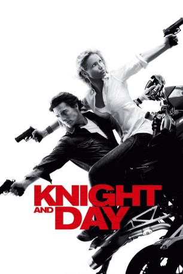
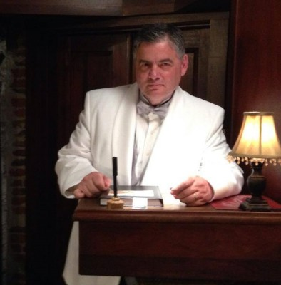

#1164 Knight and Day
 gesehen am 26.07.2017
gesehen am 26.07.2017
 
 IMDB-Wertung: 6.3 / 10
IMDB-Wertung: 6.3 / 10  Metascore: 46
Metascore: 46 
June Havens ahnt noch nichts von dem was ihr bevorsteht, als sie am Flughafen auf Roy Miller trifft. Dieser entpuppt sich als charmanter wie tödlicher Geheimagent, der mehrere Killer sowie die Piloten an Bord des Flugzeugs erschießt und die Maschine dann kurzerhand notlandet. Nach dieser unglaublichen Erfahrung erwacht June am nächsten Morgen in ihrem Bett. Doch kurze Zeit später tauchen weitere Agenten auf, die sie schnappen und für ein Verhör mitnehmen. In einer wilden Schießerei mitten auf der Autobahn trifft sie wieder auf Roy, der sie daraufhin entführt und sie nicht mehr aus den Augen lässt. Wer ist Roy Miller wirklich und warum sind skrupellose Waffenhändler, das FBI und sogar die CIA hinter ihm her? Niemand in Knight and Day scheint das zu sein, was er vorgibt…
Jahr: 2010
Dauer: 109 Minuten
FSK: 12
Land: USA Studio: 20th Century FoxTonspuren: DTS - ,
Untertitel: Deutsch,
Auflösung: 1080p (1920x800) Größe: 9052 MB
Genre: Action, Abenteuer, Komödie, Thriller
Regisseur:  James Mangold
James Mangold
Drehbuch: Patrick O'Neill
Soundtrack: John Powell
Darsteller:
 Tom Cruise als Roy Miller
Tom Cruise als Roy Miller Cameron Diaz als June Havens
Cameron Diaz als June Havens Peter Sarsgaard als Fitzgerald
Peter Sarsgaard als Fitzgerald Jordi Mollà als Antonio
Jordi Mollà als Antonio Viola Davis als Director George
Viola Davis als Director George Paul Dano als Simon Feck
Paul Dano als Simon Feck- Falk Hentschel als Bernhard
- Marc Blucas als Rodney
 Lennie Loftin als Braces
Lennie Loftin als Braces Maggie Grace als April Havens
Maggie Grace als April Havens- Rich Manley als Danny
 Dale Dye als Frank Jenkins
Dale Dye als Frank Jenkins Celia Weston als Molly
Celia Weston als Molly Gal Gadot als Naomi
Gal Gadot als Naomi Jack O'Connell als Wilmer
Jack O'Connell als Wilmer- Nilaja Sun als Allison
 Tommy Nohilly als Randy Mechanic
Tommy Nohilly als Randy Mechanic- Taylor Treadwell als Gate Agent
- Christian Finnegan als Ticket Agent
- Brian Dykstra als TSA Officer
 Brian Tarantina als Scrap Yard Man
Brian Tarantina als Scrap Yard Man- Jerrell Lee Wesley als Fireman Paul
- Matthew Lawler als Passerby Agent
- Adam Gregor als Train Cook
- Charlie Alejandro als Soldier at Airport , uncredited
- Stanis Krista Ames als Precision Driver , uncredited
- Nicole Boucher als Frightened Girl in Booth , uncredited
- Gonzalo Bouza als Henchman , uncredited
 Arnold Chon als Gunman with Shotgun , uncredited
Arnold Chon als Gunman with Shotgun , uncredited Jeffrey Corazzini als Automotive Technician , uncredited
Jeffrey Corazzini als Automotive Technician , uncredited-  Christopher J. Davis als Restaurant Patron , uncredited
- Paul Elicone als Busboy , uncredited
- Frederick Fairbanks als Undercover Agent , uncredited
 Susan Farese als Woman in Airport Pub , uncredited
Susan Farese als Woman in Airport Pub , uncredited- Mugisha Feruzi als TSA Officer , uncredited
 Jim Ford als SUV Agent , uncredited
Jim Ford als SUV Agent , uncredited- Hugo Garcia als Bull Runner , uncredited
 Suzanne Gillies als Airport Ticket Agent , uncredited
Suzanne Gillies als Airport Ticket Agent , uncredited London Hall als Stewardess , uncredited
London Hall als Stewardess , uncredited Gina Hernandez als Woman on Escalator , uncredited
Gina Hernandez als Woman on Escalator , uncredited Frankie Imbergamo als Restaurant Patron , uncredited
Frankie Imbergamo als Restaurant Patron , uncredited- Ren Knopf als Pedestrian , uncredited
- Erica LaRose als Dizzy Day , uncredited
- Conan Marchi als Restaurant Patron , uncredited
 Dan Marshall als Restaurant Patron , uncredited
Dan Marshall als Restaurant Patron , uncredited- Jeff Martineau als U.S. Army Private , uncredited
 Olivier Martinez als Beach Scene , uncredited
Olivier Martinez als Beach Scene , uncredited Erica McDermott als Bridesmaid , uncredited
Erica McDermott als Bridesmaid , uncredited Thomas McGowan als Airport Drunk , uncredited
Thomas McGowan als Airport Drunk , uncredited- Peter Motson als (uncredited
Datei: X:\2010(G-M)\Knight and Day (2010, FSK12, 1920x800).mkv seit 29.05.2015
Festplatte: HD 2010(G-Z)-2011(A-F)
 Es gibt insgesamt 85 Filme in der Gruppe '2010(G-M)'
Es gibt insgesamt 85 Filme in der Gruppe '2010(G-M)'